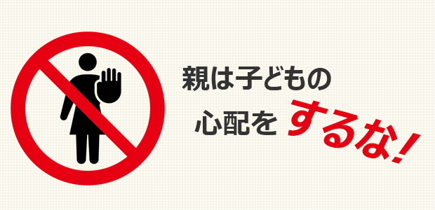

親はいつだって我が子のことが心配
子どもをもつ親と話すといつも感じるのは「親とはいつだって我が子のことが心配」なものだなということです。
小さい頃は子どもが熱を出した、ミルクを飲まないといっては心配し、学校に入れば勉強について行ってるのか、周りに迷惑かけていないかと心配する。
それで少しでも成績が芳しくなかったり、先生の言うことを聞かないと知ったら将来はどうなるのかと心配する。
受験は大丈夫か。友だちとはうまくいっているか。まさかイジメられてはいないだろうか。帰りが遅いが事故にでもあったのではないか。悪い友だちと付き合ってないだろうか。ちゃんと社会人になれるだろうか。etc…
まるで心配するために子どもを設けたかのように親の悩みは尽きません。
多くの心配は単純に我が子が「並み」以下だったらどうしよう的な、「ウチの子だけが他人より劣っていないだろうか」という比較からくる恐れで、大抵は杞憂です。
しかし子どもが思春期くらいになると、長所短所や才能の有無そして学力など「期待と現状のギャップ」が目立ち始め将来が心配になり出します。
それはなぜかというと、私たち親は自分の人生を子どもの人生に投影しているからです。
私たちは誰もがある程度まで年齢を重ねてくると、様々な経験を通じて失敗や後悔の記憶を持ちそれらが心の傷となって残ります。
「あの時ああしていれば」
「もっとこうすべきだったのに」
「なぜあんなことを言ってしまったのだろう」
このような声が意識的・無意識的に心の奥底で残響となり、特に若い頃の失敗は今ならもっとうまく対処できるのにという想いとからみ合って、やり直せるのならやり直したいと考えたりします。
そう。“やり直せるのならやり直したい。”この気持ちは誰の心にも巣くっているといえます。
そしてこの気持ちこそが親が子どもを心配する要因の一つです。
子どもに自分と同じ失敗はさせたくない！
あるいは
子どもには自分が理想とする道を歩ませたい！
要するに心配の奥には親自身の人生の“敗者復活”への思いがある。自分が生き損った人生を子どもに歩ませることによって名誉挽回したい欲求があるなら、それは子どもの人生をコントロール（支配）することになり親のエゴに他なりません。
子どもの為を思っての「心配」が実は子どもが自分らしく生きることをはばむ大きな壁になり得ることもある。
四六時中子供が心配という親は立ちどまって一度このことをじっくりと考えて欲しいと思います。
「心配するという行為」によって子どもに何かプラスを与えていると思うのは幻想でしかない。
ちょっと厳しい言い方になってしまいました。
私も子育てをしてきたから親の心配はよく分かっています。
そしてたくさんの親子を見てきた経験から、多くの心配は杞憂であると断言できます。
あまり子どものことは心配しないで下さい。
今どんなに頼りなく見える子も一定の年齢がくればきちんとした大人になります。
信じて手放す！
この姿勢が実は一番大切なのです。
心配することは親が子どもの人生に介入するだけでなく、親が子どもに自らの失敗を投影することで「失敗しない人生」を押しつけている。
しかし子どもには子どもの人生があります。
子どももやはり大人になる過程で様々な失敗を経験することで大切な学びを得ていくのです。
子どもの人生を先回りして心配する親は、子どもから自分らしく生きるチャンスを奪い、いつまでも自分に依存させることによって子どもに依存しているのです。